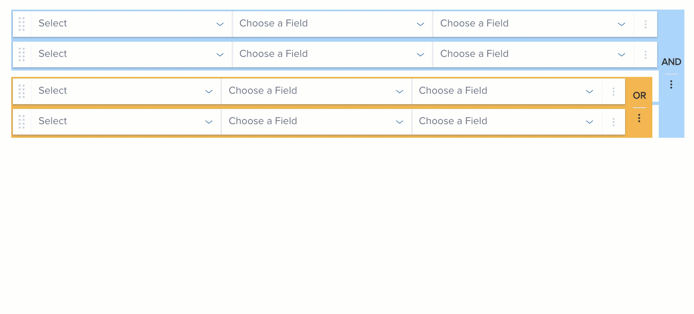

As Ellie Mae rapidly evolved its web platform, it needed a way to maintain its consistency (in design and code) and avoid as many one-offs (custom components) as possible. Additionally, most of the used components were not accessible. This led to the development of "Dimsum", the design system of Ellie Mae.
I am a part of the dim sum team where I design and add to the component library. The design system team at Ellie Mae is an agile and design-driven team. We have one-on-one with developers on a daily basis. Most of the enhancement requirements are prioritized together by design and dev teams.
Dimsum design system gave me an opportunity to work on detailed interaction design and visual design. These are some of the components that I worked on.
This is one of the components where I owned end to end design from interaction, visual to accessibility (following WCAG 2.0 Level AA guidelines). I designed various flows and states for the date picker and detailed keyboard interaction specs to ensure accessibility.
A data grid is the lifeline of enterprise software. Thus it had some interesting challenges such as our customers are used to really condensed views of data grid (which is not really accessible). When I was designing for web, I reference accessibility guidelines to balance the font sizes, color and spacing in the data grid for better readability and accessibility along with the compact view. Worked on other interactions for the data grid such as truncation, toolbar, expanding row, and filter.
Document viewer was a bigger undertaking where I designed interaction for viewing and editing a document. Additionally, worked on the accessibility of the component too. You read more details about this component in the doc management project.
This is a component that is used by admins to design advanced search queries. I designed various interactions for the component such as drag and drop, toolbar, adding custom fields to query, etc. I also spec'd out visual requirements for different states of the component.
For this component, I collaborated with product teams to identify different use cases for the pill since pills were being used for different purposes based on contexts. I gathered all the requirements and designed various states for the pills based on the context.
While these are some of these components that were designed, each of these components accompanied the following specs/guidelines.
I have worked on designing interaction specs for a number of components. This is a subset of interaction spec that I worked on for the query builder for drag and drop interaction.
Each of the components that I designed accompanied detailed UI specs along with the interaction flows, These specs were handed off to the developers as requirements to add the components to the design system. This is one example of UI specs for the data grid toolbar.
Even though basic accessibility spec such as colors and typography were already established in the design system, I spent time cross-checking them for the specific use case of the component. One such example is checking data grid in high contrast modes to ensure readability. Additionally, I used WCAG guidelines to make the components were keyboard accessible.
Heuristics: Some of the major components such as data grid, doc viewer and query builder went through formal user testing. It is difficult to do user testing for all these components individually. So, I worked with UX research team for heuristic evaluation where we tested the developed components for issues.
Implementation Feedback: We try to identify as many issues beforehand as we can, but we still discover more issues when the dev teams implement the component in their product. At that point, we work with them to understand the source of the problem and enhance the spec to resolve it. That was one of the major reason behind the re-evaluation of the data grid font, color, and spacing.
Sketch symbol and data library: Helped all the designers to speed up their wireframing process by developing a sketch symbol library. Designers have migrated from Balsamiq to sketch because of the sketch symbol library. Working with BAs to build realistic data as part of the library.
Standardized accessibility specs as part of basic component specs. Developers loved the standards so much that they want it for all the components.
Advocated product team/ developers on product teams to use design system to build their products. As a result one of the product I am working is being built using the design system, whereas other is migrating to Dimsum.
{kind=link}
{kind=link}
{kind=link}
{kind=link}
{kind=link}
{kind=link}
{kind=link}
{kind=link}